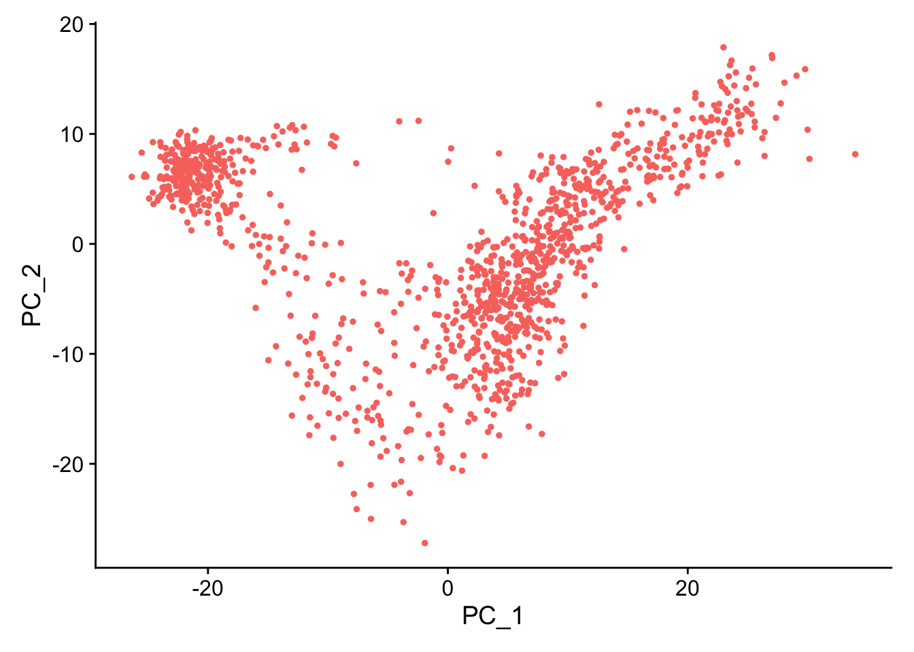
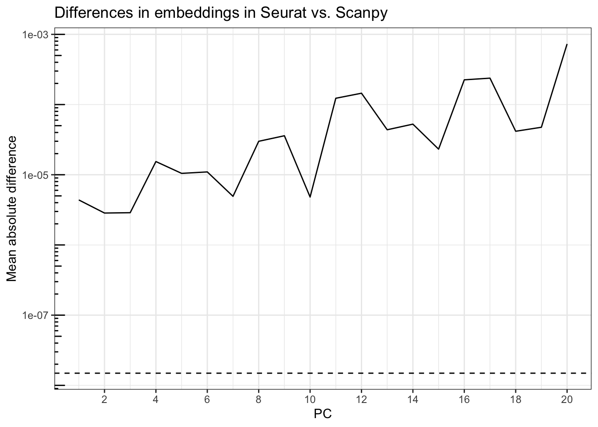

library(Seurat)
library(Matrix)
library(tidyverse)
library(reticulate)
use_virtualenv("r-reticulate")
py_config()
theme_set(theme_bw())Seurat is the standard package to analyze single cell and spatial -omics data in R, and Scanpy is the standard in Python. There has long been the R vs. Python debate in data science, though many, including myself, would say both R and Python though I use them for different data analysis tasks. However, many people do prefer one language to the other for a variety of reasons. I’m not here to add fuel to the flame war. Rather, I’m elaborating on the observation that the choice of language can greatly affect biological conclusions, because Seurat and Scanpy have different defaults and internals most users may be unaware of, by using the default settings of the de facto standard single cell and spatial -omics package in our language of choice, we inadvertently end up with different conclusions, which is bad news for reproducibility. For example, Seurat and Scanpy give quite different log fold changes for marker genes:
The results of different methods applied to the same scRNA-seq data differ substantially.
— Prof. Nikolai Slavov (@slavov_n) October 18, 2022
This is true even for fold changes, as shown below for Seurat and Scanpy.
The differences between selected transcript "markers" are even larger: https://t.co/pH4Rh3wQZv via @davisjmcc pic.twitter.com/dcSkeDOhBf
For the R package Voyager, we try to avoid this. Our collaborators in Iceland are working on a Python implementation of Voyager for those who prefer Python, and are writing “compatibility tests” to make sure that the R and Python implementations of Voyager give consistent results for core functionalities, such as those in the most introductory vignettes of R Voyager that don’t go beyond Moran’s I in spatial analysis. However, on the long run, we don’t expect the R and Python implementations to match everywhere, since some tools may be available in only one of R and Python, such as statistical tools specific to R and deep learning tools specific to Python. It turns out that with default settings, the same data normalization, and same list of highly variable genes, R and Python Voyagers gave different PCA results, because of a cryptic difference that R divides by n-1 (unbiased estimate when mean is unknown) while Scipy divides by n (maximum likelihood estimate) when computing variance. For better reproducibility, these hidden defaults should be made transparent. This made us wonder if – using default settings – whether Seurat and Scanpy give consistent PCA results.
import scanpy as sc
import pandas as pd
import matplotlib.pyplot as pltDownload data
Here we download an example Visium dataset from the mouse olfactory bulb from the 10X website, although no spatial analysis is performed here.
This is the spatial information:
if (!file.exists("visium_ob_spatial.tar.gz"))
download.file("https://cf.10xgenomics.com/samples/spatial-exp/1.3.0/Visium_Mouse_Olfactory_Bulb/Visium_Mouse_Olfactory_Bulb_spatial.tar.gz",
destfile = "visium_ob_spatial.tar.gz")Decompress the downloaded content:
if (!dir.exists("outs")) {
dir.create("outs")
system("tar -xvf visium_ob_spatial.tar.gz -C outs")
}This is the filtered gene count matrix in HDF5:
if (!file.exists("outs/filtered_feature_bc_matrix.h5"))
download.file("https://cf.10xgenomics.com/samples/spatial-exp/1.3.0/Visium_Mouse_Olfactory_Bulb/Visium_Mouse_Olfactory_Bulb_filtered_feature_bc_matrix.h5",
destfile = "outs/filtered_feature_bc_matrix.h5")Read the data into Seurat:
(seu <- Load10X_Spatial("outs"))An object of class Seurat
32285 features across 1185 samples within 1 assay
Active assay: Spatial (32285 features, 0 variable features)
1 image present: slice1Take a glimpse into the dataset:
SpatialFeaturePlot(seu, features = "nCount_Spatial") +
theme(legend.position = "right")Here we also read the data into Scanpy:
adata = sc.read_visium("outs")/Users/lambda/.virtualenvs/r-reticulate/lib/python3.10/site-packages/anndata/_core/anndata.py:1830: UserWarning: Variable names are not unique. To make them unique, call `.var_names_make_unique`.
utils.warn_names_duplicates("var")adata.var_names_make_unique()
adataAnnData object with n_obs × n_vars = 1185 × 32285
obs: 'in_tissue', 'array_row', 'array_col'
var: 'gene_ids', 'feature_types', 'genome'
uns: 'spatial'
obsm: 'spatial'Data normalization and highly variable genes
The data is already filtered. Here we normalize the data, with good old log normalization, which in Seurat default is:
\[ \mathrm{log}\left(\frac{x\times 10000}{x_{tot}} + 1 \right), \]
where \(x\) denotes expression of one gene in one cell, and \(x_{tot}\) denotes total UMI counts in the cell of interest.
seu <- NormalizeData(seu, verbose = FALSE)sc.pp.normalize_total(adata, target_sum=1e4)
sc.pp.log1p(adata)Check if the normalized data is consistent between Seurat and Scanpy
mat_py <- py$adata$X
mat_py <- as(t(mat_py), "CsparseMatrix")
mat_r <- GetAssayData(seu, "data")
mat_r <- unname(mat_r)
all.equal(mat_py@x, mat_r@x)[1] "Mean relative difference: 2.835828e-08"diffs <- abs(mat_py@x - mat_r@x)
summary(diffs) Min. 1st Qu. Median Mean 3rd Qu. Max.
2.600e-12 7.451e-09 1.589e-08 2.314e-08 3.032e-08 3.432e-07 sqrt(.Machine$double.eps)[1] 1.490116e-08While there are some differences larger than epsilon, the differences are very small and different between my laptop and my lab’s server. Next we find highly variable genes.
seu <- FindVariableFeatures(seu, verbose = FALSE)top10 <- head(VariableFeatures(seu), 10)
LabelPoints(VariableFeaturePlot(seu), points = top10, repel = TRUE)When using repel, set xnudge and ynudge to 0 for optimal resultsWarning: Transformation introduced infinite values in continuous x-axisWhile this is an olfactory bulb dataset, many top highly variable genes encode hemoglogins.
hvg_r <- VariableFeatures(seu)
is_hvg_r <- rownames(seu) %in% hvg_rThe Seurat highly variable genes are used in Scanpy for simplicity to isolate the effects of PCA defaults because Seurat and Scanpy’s highly variable gene methods are inconsistent; Scanpy’s flavor = 'seurat_v3' is actually different from Seurat v3’s defaults, because the former requires raw counts, while Seurat by default uses log normalized data and its tutorials finds highly variable genes after data normalization.
adata.var = adata.var.assign(highly_variable = r.is_hvg_r)PCA
Here we scale the data and run PCA.
seu <- ScaleData(seu, verbose = FALSE)
seu <- RunPCA(seu, npcs = 20, verbose = FALSE)sc.pp.scale(adata)
sc.tl.pca(adata, n_comps = 20)Variance explained
Seurat’s elbow plot plots standard deviation explained by each PC while Scanpy’s elbow plot plots variance ratio. Here I compute the variance ratio explained by each PC in Seurat:
tot_variance <- Misc(Reductions(seu, "pca"))[["total.variance"]]
var_explained <- Stdev(seu, reduction = "pca")^2/tot_variancevar_explained_py <- py$adata$uns["pca"]["variance_ratio"][[1]]Here we plot the variance explained by each PC by Seurat and Scanpy in the same plot:
pcs_ve <- tibble(Seurat = var_explained,
Scanpy = var_explained_py,
PC = seq_len(20)) |>
pivot_longer(cols = Seurat:Scanpy, names_to = "package", values_to = "value")
ggplot(pcs_ve, aes(PC, value, color = package, shape = package)) +
geom_point() +
scale_color_manual(values = c(Seurat = "#198CE7", Scanpy = "#3572A5")) +
scale_x_continuous(breaks = scales::breaks_width(2)) +
labs(y = "Proportion of variance explained",
title = "PC variance explained, default settings")Whereas Scanpy does divide by n-1 when calculating the variance when scaling the data (see source code), the variance explained by the PCs don’t match. I did not regress out any variable when scaling data with Seurat. One thing that might make a difference is the scale.max argument in Seurat::ScaleData(), which defaults to 10, while Scanpy’s equivalent argument, max_value, in sc.pp.scale(), defaults to None, meaning don’t clip. Seurat by default clips the scaled data at 10 to “reduce the effects of features that are only expressed in a very small number of cells”. However, I couldn’t find a source that explains why 10 was chosen as the default. Here I re-scale Seurat data without clipping.
seu2 <- ScaleData(seu, scale.max = Inf)Centering and scaling data matrixseu2 <- RunPCA(seu2, npcs = 20, verbose = FALSE)var_explained2 <- Stdev(seu2, reduction = "pca")^2/
Misc(Reductions(seu2, "pca"))[["total.variance"]]
pcs_ve2 <- tibble(Seurat = var_explained2,
Scanpy = var_explained_py,
PC = seq_len(20)) |>
pivot_longer(cols = Seurat:Scanpy, names_to = "package", values_to = "value")
ggplot(pcs_ve2, aes(PC, value, color = package, shape = package)) +
geom_point() +
scale_color_manual(values = c(Seurat = "#198CE7", Scanpy = "#3572A5")) +
scale_x_continuous(breaks = scales::breaks_width(2)) +
labs(y = "Proportion of variance explained",
title = "PC variance explained, no clipping")
Now they seem to match when plotted. See if the also numerically match:
all.equal(var_explained2, as.vector(var_explained_py))[1] "Mean relative difference: 3.453444e-07"For the most part they do match. Hence the clipping caused the difference, and users should be aware of the scale.max argument in Seurat::ScaleData() and the max_value argument in sc.pp.scale() and decide what value to use.
Embeddings
Next we compare the spot projections in PCA space, with the second Seurat object without clipping.
PCAPlot(seu2) + theme(legend.position = "none")sc.pl.pca(adata)/Users/lambda/.virtualenvs/r-reticulate/lib/python3.10/site-packages/scanpy/plotting/_tools/scatterplots.py:392: UserWarning: No data for colormapping provided via 'c'. Parameters 'cmap', 'norm' will be ignored
cax = scatter(
The overall patterns are the same. Scanpy’s PC2 is flipped, but that’s OK, because an eigenvector scaled by a scalar is still an eigenvector with the same eigenvalue. Since it’s not easy to plot all 20 PCs, we compare the PCA embeddings numerically:
pca_embeddings <- unname(Embeddings(seu2, reduction = "pca"))
pca_embeddings_py <- py$adata$obsm["X_pca"]Because the PCs can be flipped, we compare the PCs one by one:
diffs_embeddings <- numeric(20)
for (i in seq_len(20)) {
pc_r <- pca_embeddings[,i]
pc_py <- pca_embeddings_py[,i]
diffs_embeddings[i] <- min(mean(abs(pc_r - pc_py)),
mean(abs(pc_r + pc_py))) # flipped
}tibble(difference = diffs_embeddings,
PC = seq_len(20)) |>
ggplot(aes(PC, difference)) +
geom_line() +
geom_hline(yintercept = sqrt(.Machine$double.eps), linetype = 2) +
scale_y_log10() +
scale_x_continuous(breaks = scales::breaks_width(2)) +
annotation_logticks(sides = "l") +
labs(title = "Differences in embeddings in Seurat vs. Scanpy",
y = "Mean absolute difference")Accounting for the flips, the differences are generally small, but get larger for the PCs that explain less variance. The dashed line is sqrt(.Machine$double.eps), so while the magnitude of the difference may not seem great, it’s greater than can be accounted for by machine precision. Seurat uses implicitly restarted Lanczos bidiagonalization algorithm (IRLBA) for PCA, which performs approximate singular value decomposition and is much faster and memory efficient than base R prcomp(), while Scanpy by default uses ARPACK, which also uses the implicitly restarted Lanczos method for symmetric matrices.
Gene loadings
How about gene loadings?
VizDimLoadings(seu2, dims = 1:2, nfeatures = 20, balanced = TRUE)
sc.pl.pca_loadings(adata, components = "1,2", n_points = 20)The plots are too visually different to compare visually. Here we compare the gene loadings numerically:
pca_loadings <- Loadings(seu2, reduction = "pca")
# Make sure the gene orders match
gene_ind <- match(rownames(pca_loadings), rownames(seu2))
pca_loadings_py <- py$adata$varm["PCs"][gene_ind,]
pca_loadings <- unname(pca_loadings)Again, because of the flipping, we compare the loadings for each PC one by one, taking into account the flipping.
diffs_loadings <- numeric(20)
for (i in seq_len(20)) {
pc_r <- pca_loadings[,i]
pc_py <- pca_loadings_py[,i]
diffs_loadings[i] <- min(mean(abs(pc_r - pc_py)),
mean(abs(pc_r + pc_py))) # flipped
}tibble(difference = diffs_loadings,
PC = seq_len(20)) |>
ggplot(aes(PC, difference)) +
geom_line() +
geom_hline(yintercept = sqrt(.Machine$double.eps), linetype = 2) +
scale_y_log10() +
scale_x_continuous(breaks = scales::breaks_width(2)) +
annotation_logticks(sides = "l") +
labs(title = "Differences in loadings in Seurat vs. Scanpy",
y = "Mean absolute difference")Just like for the embeddings, the differences are generally not large, but get larger for the PCs that explain less variance. The dashed line is sqrt(.Machine$double.eps). Only the first 3 PCs have loadings with less than epsilon in mean absolute difference between Seurat and Scanpy.
Conclusion
In summary, the main “gotcha” is the scale.max argument in Seurat::ScaleData() that by default clips scaled values to 10, while Scanpy by default does not clip scaled data. Otherwise, the PCA results in Seurat and Scanpy are largely consistent, though mostly not within epsilon. Hopefully the kind of 1e-5 differences will not affect downstream biological inferences. However, I did not use the Scanpy default method to find highly variable genes here. In practice, the differences in highly variable genes may make a much larger difference downstream.
sessionInfo()R version 4.2.2 (2022-10-31)
Platform: x86_64-apple-darwin17.0 (64-bit)
Running under: macOS Big Sur ... 10.16
Matrix products: default
BLAS: /Library/Frameworks/R.framework/Versions/4.2/Resources/lib/libRblas.0.dylib
LAPACK: /Library/Frameworks/R.framework/Versions/4.2/Resources/lib/libRlapack.dylib
locale:
[1] en_US.UTF-8/en_US.UTF-8/en_US.UTF-8/C/en_US.UTF-8/en_US.UTF-8
attached base packages:
[1] stats graphics grDevices utils datasets methods base
other attached packages:
[1] reticulate_1.28 lubridate_1.9.2 forcats_1.0.0 stringr_1.5.0
[5] dplyr_1.1.0 purrr_1.0.1 readr_2.1.4 tidyr_1.3.0
[9] tibble_3.1.8 ggplot2_3.4.1 tidyverse_2.0.0 Matrix_1.5-3
[13] SeuratObject_4.1.3 Seurat_4.3.0
loaded via a namespace (and not attached):
[1] Rtsne_0.16 colorspace_2.1-0 deldir_1.0-6
[4] ellipsis_0.3.2 ggridges_0.5.4 rprojroot_2.0.3
[7] rstudioapi_0.14 spatstat.data_3.0-0 farver_2.1.1
[10] leiden_0.4.3 listenv_0.9.0 bit64_4.0.5
[13] ggrepel_0.9.3 fansi_1.0.4 codetools_0.2-19
[16] splines_4.2.2 knitr_1.42 polyclip_1.10-4
[19] jsonlite_1.8.4 ica_1.0-3 cluster_2.1.4
[22] png_0.1-8 uwot_0.1.14 shiny_1.7.4
[25] sctransform_0.3.5 spatstat.sparse_3.0-0 compiler_4.2.2
[28] httr_1.4.5 fastmap_1.1.1 lazyeval_0.2.2
[31] cli_3.6.0 later_1.3.0 htmltools_0.5.4
[34] tools_4.2.2 igraph_1.4.1 gtable_0.3.1
[37] glue_1.6.2 RANN_2.6.1 reshape2_1.4.4
[40] Rcpp_1.0.10 scattermore_0.8 vctrs_0.5.2
[43] spatstat.explore_3.0-6 nlme_3.1-162 progressr_0.13.0
[46] lmtest_0.9-40 spatstat.random_3.1-3 xfun_0.37
[49] globals_0.16.2 timechange_0.2.0 mime_0.12
[52] miniUI_0.1.1.1 lifecycle_1.0.3 irlba_2.3.5.1
[55] goftest_1.2-3 future_1.31.0 MASS_7.3-58.2
[58] zoo_1.8-11 scales_1.2.1 hms_1.1.2
[61] promises_1.2.0.1 spatstat.utils_3.0-1 parallel_4.2.2
[64] RColorBrewer_1.1-3 yaml_2.3.7 pbapply_1.7-0
[67] gridExtra_2.3 stringi_1.7.12 rlang_1.0.6
[70] pkgconfig_2.0.3 matrixStats_0.63.0 evaluate_0.20
[73] lattice_0.20-45 ROCR_1.0-11 tensor_1.5
[76] labeling_0.4.2 patchwork_1.1.2 htmlwidgets_1.6.1
[79] bit_4.0.5 cowplot_1.1.1 tidyselect_1.2.0
[82] here_1.0.1 parallelly_1.34.0 RcppAnnoy_0.0.20
[85] plyr_1.8.8 magrittr_2.0.3 R6_2.5.1
[88] generics_0.1.3 DBI_1.1.3 withr_2.5.0
[91] pillar_1.8.1 fitdistrplus_1.1-8 survival_3.5-3
[94] abind_1.4-5 sp_1.6-0 future.apply_1.10.0
[97] hdf5r_1.3.8 KernSmooth_2.23-20 utf8_1.2.3
[100] spatstat.geom_3.0-6 plotly_4.10.1 tzdb_0.3.0
[103] rmarkdown_2.20 grid_4.2.2 data.table_1.14.8
[106] digest_0.6.31 xtable_1.8-4 httpuv_1.6.9
[109] munsell_0.5.0 viridisLite_0.4.1